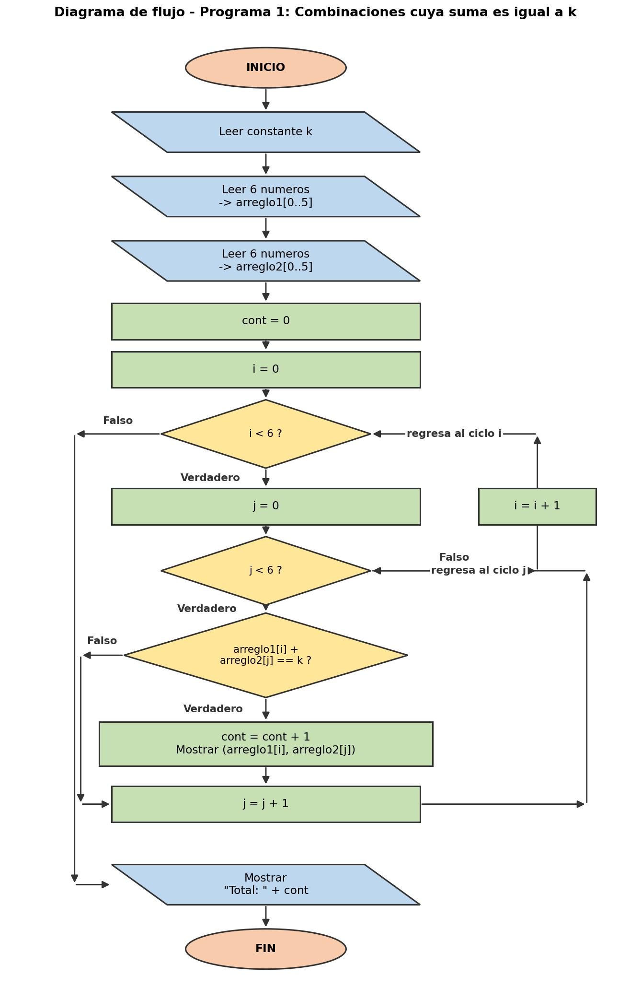
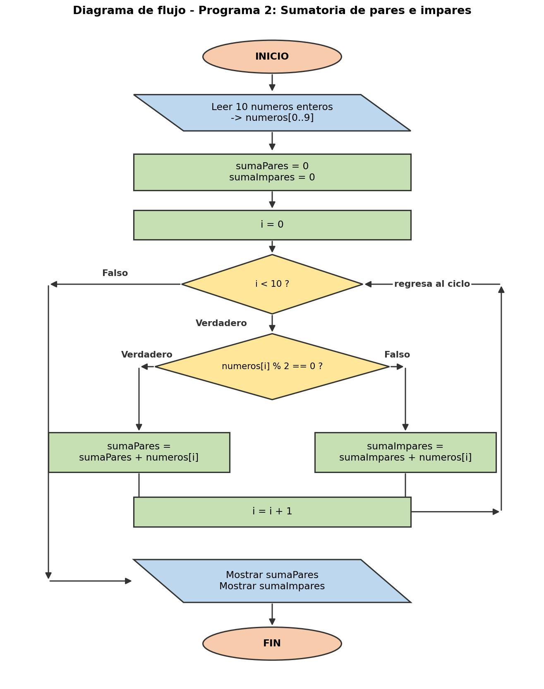

Ejercicios prácticos en Java — trabajo colaborativo. Duración sugerida: 6 a 9 minutos.
// Portada con los nombres de los 2 integrantes // y el título: "Actividad 6 - Java"
Hola, somos [Integrante 1] e [Integrante 2]. En este video presentamos la Actividad 6 de Lógica de Programación, hecha en lenguaje Java. Mostramos dos programas: el primero cuenta las combinaciones de dos arreglos cuya suma es igual a una constante k, y el segundo suma por separado los números pares e impares de un arreglo de 10 posiciones. De cada uno explicamos su diagrama de flujo, su código por partes, y hacemos tres pruebas.

Este es el diagrama del primer programa. Empieza en INICIO; se lee la constante k y luego se llenan los dos arreglos de 6 posiciones. Se pone el contador en cero y entramos a dos ciclos anidados: el de afuera con el índice i recorre el primer arreglo, y el de adentro con el índice j recorre el segundo. Adentro se pregunta si arreglo1[i] más arreglo2[j] es igual a k: si es verdadero, sumamos uno al contador y mostramos el par; si es falso, seguimos. Al terminar los dos ciclos se muestra el total.
import java.util.Scanner; public class CombinacionesSuma { public static void main(String[] args) { Scanner sc = new Scanner(System.in); final int TAM = 6; int[] arreglo1 = new int[TAM]; int[] arreglo2 = new int[TAM];
Aquí preparamos todo. Importamos la clase Scanner, que nos permite leer datos por teclado. Definimos TAM en 6, que es el tamaño de cada arreglo, y creamos los dos arreglos de enteros: arreglo1 y arreglo2, cada uno de seis posiciones.
System.out.print("Ingrese el valor de la constante k: "); int k = sc.nextInt();
Lo primero que pedimos al usuario es la constante k. Ese es el número contra el que vamos a comparar todas las sumas. Lo guardamos en la variable k.
for (int i = 0; i < TAM; i++) { System.out.print("Arreglo 1 - posicion " + (i+1) + ": "); arreglo1[i] = sc.nextInt(); }
Con este ciclo for llenamos el primer arreglo. El ciclo se repite seis veces, una por cada posición, y en cada vuelta le pedimos un número al usuario y lo guardamos en arreglo1. El segundo arreglo se llena exactamente igual con otro ciclo.
int contador = 0; for (int i = 0; i < TAM; i++) { for (int j = 0; j < TAM; j++) { if (arreglo1[i] + arreglo2[j] == k) { contador++; System.out.println(" (" + arreglo1[i] + ", " + arreglo2[j] + ")"); } } }
Este es el corazón del programa. El contador arranca en cero. El ciclo de afuera toma cada valor del primer arreglo y el de adentro lo combina con cada valor del segundo, así probamos todas las combinaciones posibles. Cuando la suma de los dos da exactamente k, sumamos uno al contador y mostramos ese par en pantalla.
if (contador == 0) { System.out.println(" No existen combinaciones que sumen " + k + "."); } System.out.println("\nTotal de combinaciones encontradas: " + contador);
Al final, si el contador quedó en cero avisamos que no hubo ninguna combinación. Y en todos los casos mostramos el total de combinaciones que se encontraron.
arreglo1: 1 2 3 4 5 6
arreglo2: 1 2 3 4 5 6
(1,6) (2,5) (3,4) (4,3) (5,2) (6,1) Total: 6✔ 6 combinaciones
arreglo1: 2 4 6 8 10 12
arreglo2: 1 3 5 7 9 11
(2,11) (4,9) (6,7) (8,5) (10,3) (12,1) Total: 6✔ 6 combinaciones
arreglo1: 1 1 1 1 1 1
arreglo2: 1 1 1 1 1 1
No existen combinaciones... Total: 0✔ 0 combinaciones

Este diagrama también arranca en INICIO. Leemos los 10 números del arreglo y ponemos en cero los dos acumuladores: sumaPares y sumaImpares. Después un ciclo con el índice i recorre el arreglo y, para cada número, pregunta si el residuo de dividirlo entre dos es cero. Si es verdadero, el número es par y se suma a sumaPares; si es falso, es impar y se suma a sumaImpares. Al terminar el ciclo mostramos las dos sumatorias.
import java.util.Scanner; public class SumaParesImpares { public static void main(String[] args) { Scanner sc = new Scanner(System.in); final int TAM = 10; int[] numeros = new int[TAM]; int sumaPares = 0; int sumaImpares = 0;
Preparamos el programa: importamos Scanner para leer por teclado, definimos TAM en 10 y creamos el arreglo de enteros. También creamos dos variables acumuladoras, sumaPares y sumaImpares, ambas en cero, donde iremos guardando los resultados.
for (int i = 0; i < TAM; i++) { System.out.print("Posicion " + (i+1) + ": "); numeros[i] = sc.nextInt(); }
Con este ciclo for llenamos el arreglo. Se repite diez veces y en cada vuelta le pedimos un número entero al usuario y lo guardamos en la posición correspondiente.
for (int i = 0; i < TAM; i++) { if (numeros[i] % 2 == 0) { sumaPares += numeros[i]; } else { sumaImpares += numeros[i]; } }
Aquí está la lógica principal. Recorremos el arreglo y usamos el operador módulo, que da el residuo de una división. Si al dividir el número entre dos el residuo es cero, es par y lo sumamos a sumaPares; en caso contrario es impar y lo sumamos a sumaImpares.
System.out.println("\nLa sumatoria de numeros pares es: " + sumaPares); System.out.println("La sumatoria de numeros impares es: " + sumaImpares);
Y para terminar, imprimimos en pantalla las dos sumatorias: primero la de los pares y luego la de los impares.
4 7 8 9 10 11 13 6 2 1
Pares: 30 Impares: 41✔ 30 y 41
2 4 6 8 10 12 14 16 18 20
Pares: 110 Impares: 0✔ 110 y 0
-5 -4 3 2 7 0 -1 8 9 10
Pares: 16 Impares: 13✔ 16 y 13
“En resumen, aplicamos arreglos, ciclos for, ciclos anidados, condicionales y el operador módulo para resolver los dos ejercicios en Java. Gracias por ver el video.”